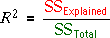
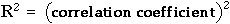

Coefficient of determination
A useful summary statistic is the proportion of the total variation that is explained, the coefficient of determination, R2,

A proportion (1 - R2) of the total variation remains unexplained by the model.
Although it is derived with quite a different aim,

Example